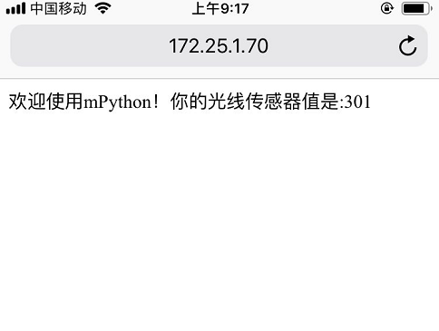

10.5. HTTP¶
HTTP是基于客户端/服务端（C/S）的架构模型，通过一个可靠的链接来交换信息，是一个无状态的请求/响应协议。
一个HTTP”客户端”是一个应用程序（Web浏览器或其他任何客户端），通过连接到服务器达到向服务器发送一个或多个HTTP的请求的目的。
10.5.1. HTTP GET request¶
以下示例显示了如何下载网页。HTTP使用端口80，您首先需要发送“GET”请求才能下载任何内容。作为请求的一部分，您需要指定要检索的页面。
socket实现HTTP get方法:¶
1 2 3 4 5 6 7 8 9 10 11 12 13 14 15 16 17 18 19 20 21 22 23 24 25 | import socket
# 定义http get函数
def http_get(url):
# 解析url
_, _, host, path = url.split('/', 3)
# 将网站的域名解析成IP地址
addr = socket.getaddrinfo(host, 80)[0][-1]
# 构建socket
s = socket.socket()
# 连接IP地址
s.connect(addr)
# 以http get 请求格式发送
s.send(bytes('GET /%s HTTP/1.0\r\nHost: %s\r\n\r\n' % (path, host), 'utf8'))
while True:
# socket接收
data = s.recv(100)
if data:
print(str(data, 'utf8'), end='')
else:
break
s.close()
# 访问 http://micropython.org/ks/test.html
http_get('http://micropython.org/ks/test.html')
|
提示
在使用socket模块时，请先连接wifi，并且确保可以访问互联网。有关如何wifi连接，请查看上章节 配置wifi 。
http_get('http://micropython.org/ks/test.html') ,掌控板客户端向 micropython.org 服务端发送范围test路径资源的get请求。服务端收到请求后将返回数据给客户端。
10.5.1.1. urequest 模块¶
上面是使用socket来实现http的get请求。我们可以使用 urequests 模块,里面已封装HTTP协议一些常用的请求方式,使用更为简便。
使用urequest模块,访问网页¶
1 2 3 4 5 6 7 8 9 10 | import urequests
from mpython import *
my_wifi = wifi()
my_wifi.connectWiFi('ssid','psw')
# http get方法
r = urequests.get('http://micropython.org/ks/test.html')
# 响应的内容
r.content
|
有关更多的 urequests 模块使用,请查阅该模块说明。
10.5.2. HTTP Server¶
以下示例，掌控板作为HTTP服务端，使用浏览器可以访问板载光线传感器:¶
1 2 3 4 5 6 7 8 9 10 11 12 13 14 15 16 17 18 19 20 21 22 23 24 25 26 27 28 29 30 31 32 33 34 35 36 37 38 39 40 41 42 43 44 | import socket
import network,time
from mpython import *
# 实例化wifi类
mywifi=wifi()
# WiFi连接，设置ssid 和password
mywifi.connectWiFi("ssid","psw")
def main():
s = socket.socket()
ai = socket.getaddrinfo(mywifi.sta.ifconfig()[0], 80)
print("Bind address info:", ai)
addr = ai[0][-1]
s.setsockopt(socket.SOL_SOCKET, socket.SO_REUSEADDR, 1)
s.bind(addr)
s.listen(5)
print("Listening, connect your browser to http://%s:80/" %addr[0])
# oled显示掌控板ip地址
oled.DispChar('Connect your browser',0,0,)
oled.DispChar('http://%s' %addr[0],0,16)
oled.show()
while True:
res = s.accept()
client_s = res[0]
client_addr = res[1]
print("Client address:", client_addr)
print("Client socket:", client_s)
req = client_s.recv(4096)
print("Request:")
print(req)
# 状态行
client_s.send(b'HTTP/1.0 200 OK\r\n')
# 响应类型
client_s.send(b'Content-Type: text/html; charset=utf-8\r\n')
# CRLF 回车换行
client_s.send(b'\r\n')
# 响应内容
content = '欢迎使用掌控板mPython！你的光线传感器值是:%d' % light.read()
client_s.send(content)
# 关闭socket
client_s.close()
|
在REPL中运行main:
>>> main()
手机或笔记本电脑连接相同wifi，使其在同个局域网内。按打印提示或oled屏幕显示ip，使用浏览器访问掌控板主机IP地址。
